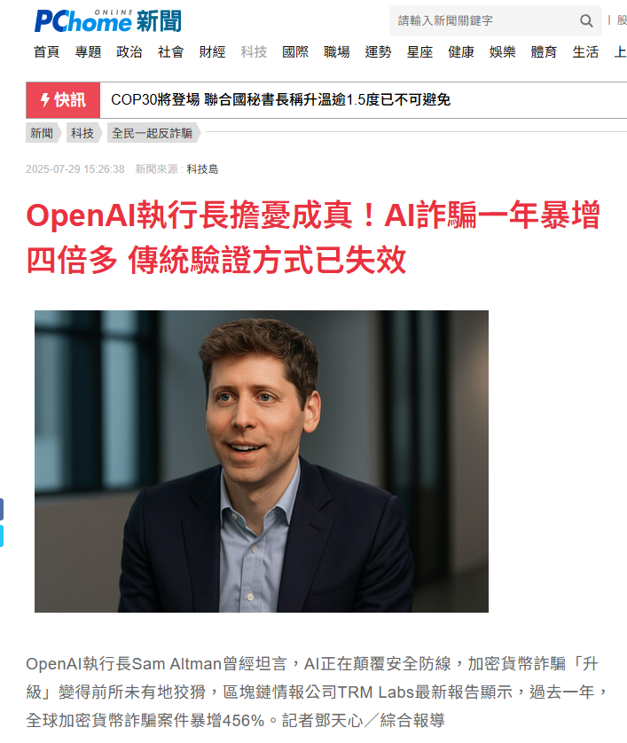
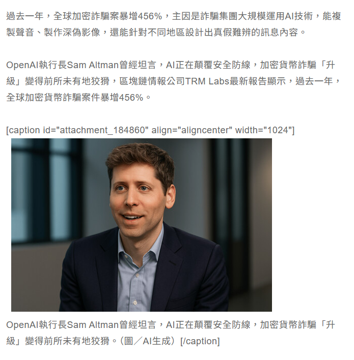
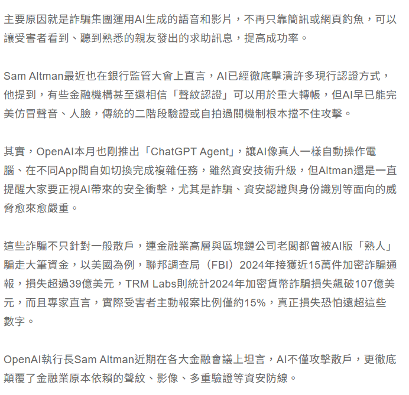

AI詐騙一年暴增四倍多
近一年來，全球加密貨幣詐騙案件暴增 456%，顯示詐騙集團已大量運用 AI 技術。透過深偽影像與聲音複製，詐騙手法不再侷限於簡訊與釣魚網頁，而是能製造出「親友求助」般的真實情境，讓受害者更難分辨。OpenAI 執行長 Sam Altman 也多次警告，傳統的聲紋認證、二階段驗證等機制已無法有效防禦，AI 足以突破既有資安防線。
報告指出，不僅散戶，連金融業高層與區塊鏈公司老闆都曾遭假冒熟人詐騙，造成數十億美元損失，實際金額可能更高。此案例凸顯 AI 技術帶來的雙面刃效應：一方面推動創新，另一方面卻加速資安風險。民眾與金融機構必須提升驗證機制，並保持警覺，才能降低 AI 詐騙的衝擊。



來源:https://news.pchome.com.tw/science/technice/20250729/index-75377399875811338005.html